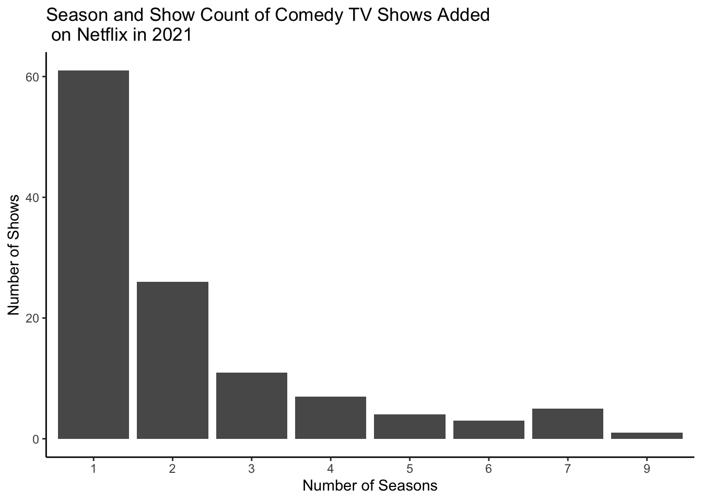
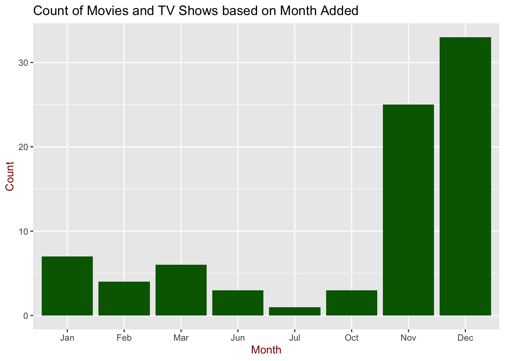

Show the code
library(tidyverse)
library(ggplot2)
library(stringr)library(tidyverse)
library(ggplot2)
library(stringr)netflix <- read.csv("../veronica-2222.github.io/netflix_titles.csv")
netflix |>
group_by(director) |>
summarize(count = n()) |>
arrange(desc(count))# A tibble: 4,529 × 2
director count
<chr> <int>
1 "" 2634
2 "Rajiv Chilaka" 19
3 "Raúl Campos, Jan Suter" 18
4 "Marcus Raboy" 16
5 "Suhas Kadav" 16
6 "Jay Karas" 14
7 "Cathy Garcia-Molina" 13
8 "Jay Chapman" 12
9 "Martin Scorsese" 12
10 "Youssef Chahine" 12
# ℹ 4,519 more rowsThis data came from kaggle.com and was uploaded by Shivam Bansal. It is regularly updated, but its last update was 3 years ago. The data covers 8,807 Netflix titles, and contains information like their type (TV show or movie), title, director, cast, country, date added on Netflix, actual release year, rating, and duration (as seen from the tibble above).
After observing the data set, I thought it would be interesting to see if there are possible insights that could be found when comparting the year a show or movie was released and the year they were added on Netflix.
netflix |>
select(release_year, date_added) |>
mutate(added_year = str_extract(date_added, "(?<=, ).+(?=$)")) |> #this only takes in the years from the date added column
filter(!is.na(release_year), !is.na(added_year)) |> #removes the NAs
ggplot(aes(x = release_year, y = added_year)) + #creates a scatterplot
geom_point(alpha = 0.3) +
labs(
x = "Year Show/Movie was Released",
y = "Year Show/Movie was Added",
title = "Analysis of Year Show/Movie was Released\n\ versus Year Added on Netflix"
) +
theme_minimal()The graph displays the difference between the year a show or movie was released versus the year it was added on Netflix. The opaqueness of the points suggests when majority of the shows and movies were added on Netflix. In this case it seems as if majority of the shows and movies were added in 2016 and onward.
Focusing on TV shows, I wondered if the proportion of genres differed across different TVs, like TV-13 vs. TV-MA.
netflix|>
select(rating, listed_in) |>
mutate(tv_rating = str_extract(rating, "(?<=-).+(?=$)")) |> #only takes in the type of tv-rating, removes "TV-"
mutate(first_listed = str_extract(listed_in, "\\w+")) |> #creates a first_listed column with just the first genre they're listed in
filter(first_listed %in% c("Action", "Crime", "Dramas", "Comedies")) |> #filters the first listed in genres
filter(tv_rating %in% c("13", "14", "G", "PG", "MA")) |> #filters in the tv ratings
mutate (level_rating = fct_relevel(tv_rating, c("13", "14", "G", "PG", "MA"))) |> #relevels the tv rating so that they're in this order
ggplot(aes(x = level_rating, fill = first_listed)) + #creates a bar plot
geom_bar(position = "fill") +
labs(
title = "Number of Specific TV Ratings",
subtitle = "Categorized by Genres",
x = "TV-__",
y = "Proportion of Shows",
fill = "Genre",
) +
theme_classic()
The bar reveals the proportion of shows’ first genre they are listed under and their TV-rating. It can reveal which genres were mostly rated TV-14, PG, etc. For example, one of the major points this bar reveals is that majority of the TV-show rated as G are Dramas. The lack of blue suggests that there are few TV shows that have ‘Crime’ as the first genre they are listed under. And many of the TV-14 and PG shows are listed under ‘Comedies’ and ‘Dramas’.
To further analyze TV shows, I wanted to see if TV shows listed under Comedies for those added in 2021 had an average amount of seasons.
netflix |>
select(type, duration, title, date_added, listed_in) |>
group_by(type) |>
filter(str_detect(type, "TV Show")) |> #filters so that it only includes the TV shows
filter(str_detect(date_added , "2021")) |> #filters so that it only includes those added in 2021
filter(str_detect(listed_in, "Comedies")) |> #filters so that it includes those with "Comedies" in their genre
mutate(season = str_sub(duration, 1, 1)) |> #filters out the word "season"
summarize(type, title, season) |>
ggplot(aes(x = season)) + #creates bar plot
geom_bar() +
labs(
title = "Season and Show Count of Comedy TV Shows Added \n\ on Netflix in 2021",
x = "Number of Seasons",
y = "Number of Shows"
) +
theme_classic()
The bar graph reveals the frequency of comedy shows added on Netflix in 2021 to have a certain number of seasons. It is evident that majority of the comedy shows only have 1 season.
This specific analysis is a little more personal. I always enjoy Christmas movies, so I thought that I could gather a list of TV shows and movies added on Christmas Eve to expand my list of Christmas media.
Christmas_eve <- netflix |>
select(title, type, date_added, listed_in) |>
mutate(first_listed = str_extract(listed_in, "\\w+")) |> #filters so that it only includes the first genre they're listed in
mutate(Title_Type= str_c(title, type, first_listed, sep=': ')) |> #creates a string with title: type: genre
mutate(Date = str_extract(date_added, ".+(?=,)")) |> #removes the year from date_added column
mutate(Genre = listed_in) |>
filter(Date == "December 24"| Genre == "TV")|> #filters so that it inludes those added on December 24 and are listed as TV
select(Title_Type)
as_tibble(Christmas_eve)# A tibble: 9 × 1
Title_Type
<chr>
1 Bridezilla: Movie: Comedies
2 Cemara's Family: Movie: Children
3 Hello, Love, Goodbye: Movie: Dramas
4 CAROLE & TUESDAY: TV Show: Anime
5 Como caído del cielo: Movie: Comedies
6 John Mulaney & The Sack Lunch Bunch: Movie: Children
7 Lost in Space: TV Show: TV
8 Stand Up and Away! with Brian Regan: TV Show: Stand
9 Way Back into Love: TV Show: International The table classifies the titles added on Netflix on December 24 (with varying years) with their type (TV Show or Movie) and the first genre they are listed under. However, some of them aren’t Christmas movies, like Bridezilla and Hello, Love, Goodbye. So, I decided to dig deeper into this data set.
Instead of only looking at the date added, I thought that if a description had the word “Christmas” in it, then maybe the likelihood of getting a Christmas movie or TV show would be higher.
Christmas <- netflix |>
select(title, type, date_added, listed_in, description) |>
filter(str_detect(description, "Christmas")) |> #filters so that it only includes titles with Christmas in its description
mutate(first_listed = str_extract(listed_in, "\\w+")) |> #only includes the first genre they're listed in
mutate(Date = str_extract(date_added, "\\w{3}")) |> #only includes the first three letters of the month for the date they're added
mutate(Date = as.factor(Date)) |> #factors Date column
mutate(Date = fct_relevel(Date, c("Jan", "Feb", "Mar", "Jun", "Jul", "Oct", "Nov", "Dec"))) |> #had to reorder the months
mutate(Title_Type = str_c(title, type, first_listed, sep=': ')) |> #creates a string with title:type:genre
summarize(Title_Type, Date)
head(Christmas) Title_Type Date
1 Love Is a Story: Movie: International Jun
2 Home for Christmas: TV Show: International Dec
3 An Unremarkable Christmas: Movie: Comedies Dec
4 How To Ruin Christmas: TV Show: International Dec
5 A California Christmas: Movie: Comedies Dec
6 A Trash Truck Christmas: Movie: Children DecThe table classifies titles on Netflix with the word “Christmas” in its description with their title, type, first genre listed. The column ‘Date’ was cleaned up so that it would only include the first three letters of the months. By only including descriptions that have the word “Christmas” in it, I was able to retrieve a greater list of Christmas movies, as seen from the tibble above.
#creates a bar plot with months as x-axis
Christmas |>
ggplot(aes(x = Date)) +
geom_bar(fill = "darkgreen") +
labs(
title = "Count of Movies and TV Shows based on Month Added",
x = "Month",
y = "Count"
) +
theme(
axis.title = element_text(color = "darkred")
)
After not getting a list of Christmas movies after filtering titles added on December 24, I also created this bar graph from the table above it to see when such titles with “Christmas” in its description are added on Netflix. From the bar graph, it appears that majority of them are added on December and November, so maybe Netflix adds them throughout the month of December and not just Christmas Eve. I also found it quite surprising that after observing this graph, there’s quite a couple of titles added in July and July, months I wouldn’t expect to see Christmas movies added on Netflix. The titles added in June and July are seen in the table below.
July <- Christmas|>
filter(str_detect(Date, "Jul")) #creates a table with just titles with Christmas in its description that are added in July
June <- Christmas |>
filter(str_detect(Date, "Jun")) #creates a table with just titles with Christmas in its description that are added in June
Summer <- rbind(July, June) #creates a table combining the two tables above it
Summer Title_Type Date
1 Zipi & Zape y la Isla del Capitan: Movie: Children Jul
2 Love Is a Story: Movie: International Jun
3 Dr. Seuss' The Grinch: Movie: Children Jun
4 How the Grinch Stole Christmas: Movie: Children Jun